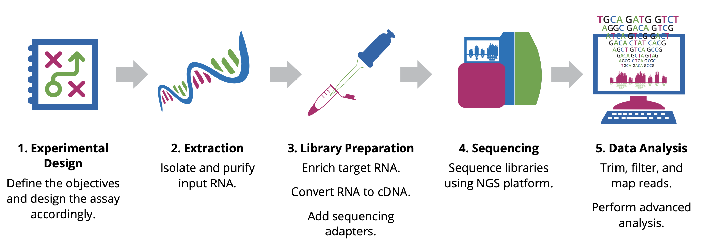

RNA-seq Workflow¶
Before beginning an RNA-Seq experiment, you should understand and carefully consider each step of the RNA-Seq workflow: Experimental design, Extraction, Library preparation, Sequencing, and Data analysis.

Experimental design¶
The design stage of your experiment is arguably the most critical step in ensuring the success of an RNA-Seq experiment. Researchers must make key decisions at the start of any NGS project, including the type of assay and the number of samples to analyze. The optimal approach will depend largely on the objectives of the experiment, hypotheses to be tested, and expected information to be gathered.
Extraction¶
The first step in characterizing the transcriptome involves isolating and purifying cellular RNA. The quality and quantity of the input material have a significant impact on data quality; therefore, care must be taken when isolating and preparing RNA for sequencing. Given the chemical instability of RNA, there are two major reasons for RNA degradation during experiments: - RNA contains ribose sugar and is not stable in alkaline conditions because of the reactive hydroxyl bonds. RNA is also more prone to heat degradation than DNA. - Ribonucleases (RNases) are ubiquitous and very stable, so avoiding them is nearly impossible. It is essential to maintain an RNase-free environment by wearing sterile disposable gloves when handling reagents and RNA samples, employing RNase inhibitors, and using DEPC-treated water instead of PCR-grade water. Additionally, proper storage of RNA is crucial to avoid RNA degradation.
In the short term, RNA may be stored in RNase-free water or TE buffer at -80°C for 1 year without degradation. For the long term, RNA samples may be stored as ethanol precipitates at -20°C. Avoid repeated freeze-thaw cycles of samples, which can lead to degradation. RNA of high integrity will maximize the likelihood of obtaining reliable and informative results.
Library Preparation¶
This involves generating a collection of RNA fragments that are compatible for sequencing. The process involves enrichment of target (non-ribosomal) RNA, fragmentation, reverse transcription (i.e. cDNA synthesis), and addition of sequencing adapters and amplification. The enrichment method determines which types of transcripts (e.g. mRNA, lncRNA, miRNA) will be included in the library. In addition, the cDNA synthesis step can be performed in a such a way as to maintain the original strand orientation of the transcript, generating what is known as ‘strand-specific’ or ‘directional’ libraries.
Sequencing¶
Parameters for sequencing—such as read length, configuration, and output—depend on the goals of your project and will influence your choice of instrument and sequencing chemistry. The main NGS technologies can be grouped into two categories: short-read (or ‘second generation’) sequencing, and long-read (or ‘third generation’) sequencing. Both have distinct benefits for RNA-Seq. - Short-read sequencing is relatively inexpensive on a per-base basis and can generate billions of reads in a massively parallel manner, with single-end read lengths ranging between 50 and 300 bp. The high-throughput nature of this technology is ideal for quantifying the relative abundance of transcripts or identifying rare transcripts. Several platforms available on the market offer flexible outputs using roughly similar chemistry. Each cDNA fragment can be sequenced from only one end, called single-end (SE) sequencing, or both ends, called paired-end (PE) sequencing. The former is generally less expensive and faster than the latter. However, paired-end sequencing helps detect genomic rearrangements and repetitive sequence alignments better than the single- end configuration, since more information is collected from each fragment. - Long-read sequencing can resolve inaccessible regions of the genome and read through the entire length of RNA transcripts, allowing precise determination of specific isoforms. Two of the leading long-read sequencing platform providers include Pacific Biosciences (PacBio), and Oxford Nanopore Technologies®.
However, if cost reduction is paramount and/or high data output is required, short-read sequencing is a better choice.
Data Analysis¶
Evaluating your data quality and extracting biologically relevant information is the final and most rewarding step in an RNA-Seq experiment. It is important to discuss your project with an experienced bioinformatician to find the best analysis pipeline for your data. One pipeline does not fit all approaches.
Exercises
- Rank genes based on expression?
- Identify differentially expressed genes after inducing a drug
- Identify Novel transcripts
- Identify bacterial and eukaryotic genes in a sample
Yeast Dataset¶
This workshop uses the dataset from yeast RNA-seq experiment, Lee et al 2008
- Wild-type versus RNA degradation mutants
- Subset of data (chromosome 1)
- Six samples (3 WT / 3 MT)
- Single end sequencing
Overview of Illumina Sequencing¶
Here is a video to illumina sequencing.